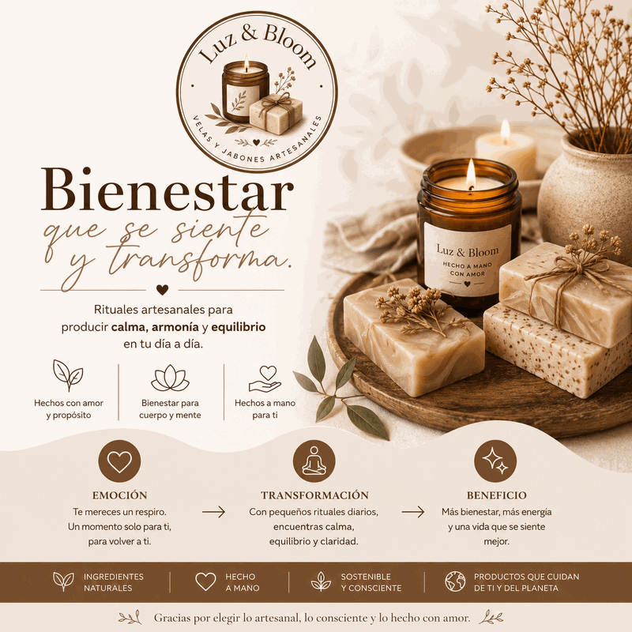
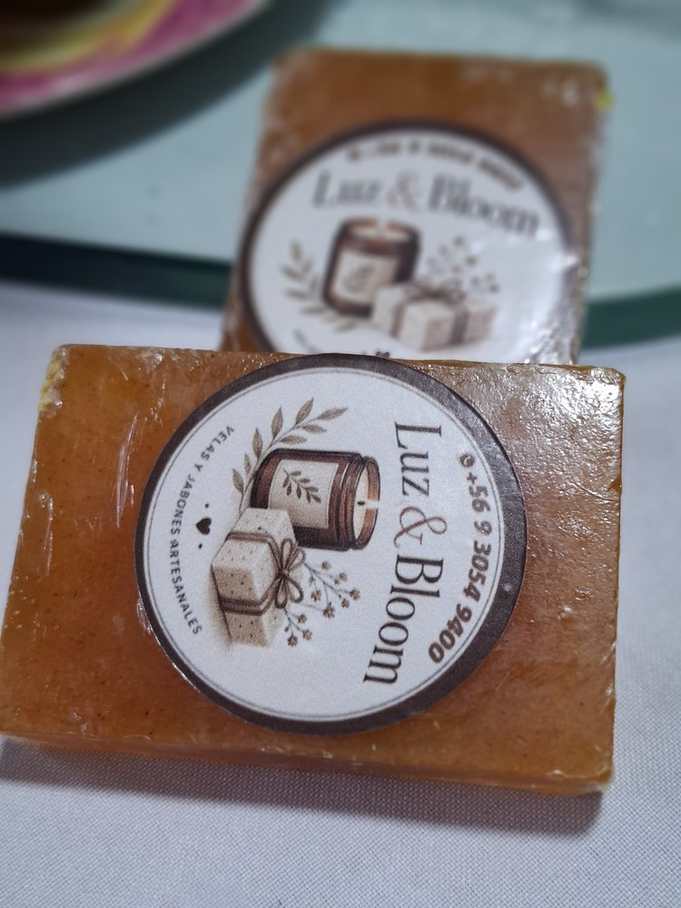
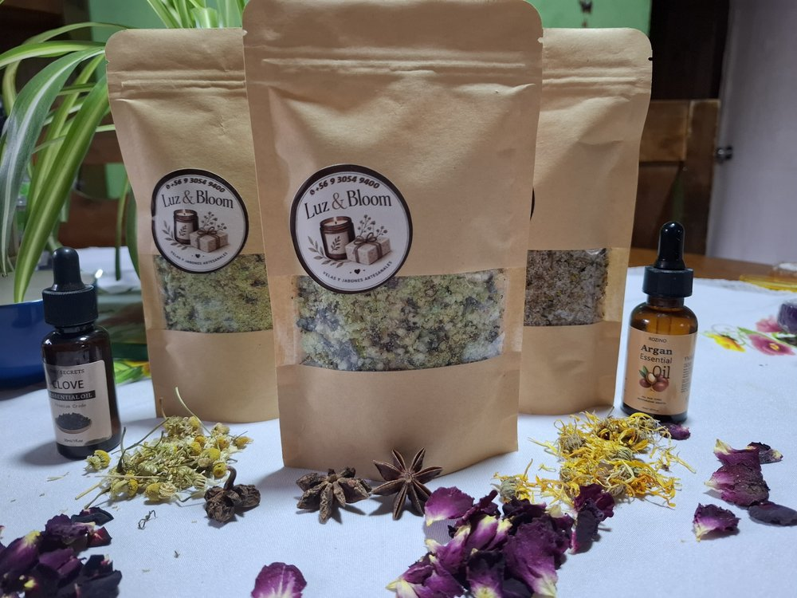

1. Velas Artesanales y Aromáticas
Velas elaboradas con ingredientes de origen natural, flores y hierbas aromáticas en envases reutilizables.


Luz & Bloom nace del amor por la naturaleza y el deseo de crear pequeños momentos de bienestar en medio de la rutina. Somos un emprendimiento local y de producción artesanal dedicado a elaborar velas, jabones y sales de baño que invitan a detenerse, respirar y regalarse un momento para uno mismo.
Queremos que cada producto sea una invitación a hacer una pausa, reconectar contigo y permitirte florecer.
Velas elaboradas con ingredientes de origen natural, flores y hierbas aromáticas en envases reutilizables.
Jabones naturales a base de hierbas, flores, miel, café y especias para una experiencia de limpieza suave y reconfortante.

Sales de baño enriquecidas con pétalos florales y esencias botánicas para un baño reconfortante y sensorial.
